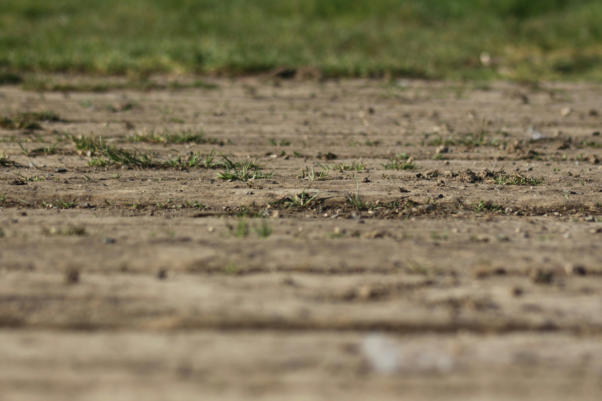

Soil Ninja TB
Explore Soil Ninja TB’s soil profile table and peer review.
Visit Soil Ninja TB’s page →FSR 2 · Soil Science Group Project
Explore Soil Ninja TB’s soil profile table and peer review.
Visit Soil Ninja TB’s page →Soil observations and peer review.
Visit Soil Ninja CS’s page →Soil observations and peer review.
Visit Soil Ninja NZ’s page →Check out the locations of our group’s three soil series on the interactive map below!
